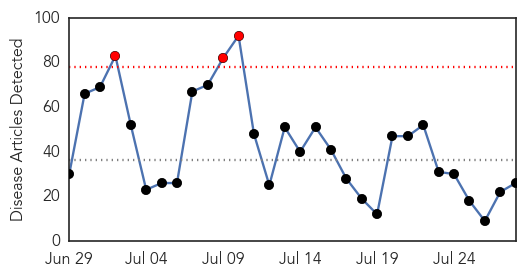
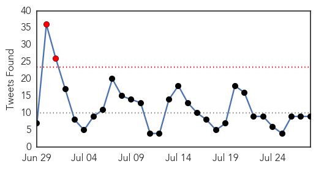
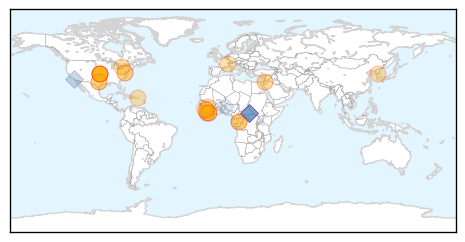
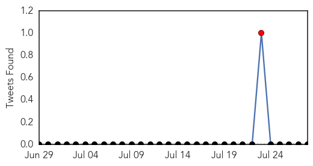
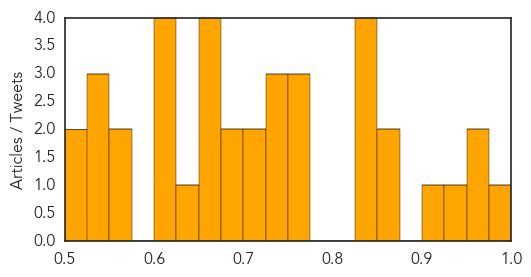

Ebola
30-Day Web Trend
3 alerts, 0 warnings

30-Day Twitter Trend
2 alerts, 0 warnings

Article Locations
Article Confidences

Top Articles:
- 1.000
- US health official: Ebola has 'upper hand'
- 0.997
- Ebola Survivors Donate Plasma for Treatment of New cases in Sierra Leone
- 0.990
- 21-day quarantine ordered for U.S. troops on Ebola mission to Africa > IGIHE.com English Version
- 0.989
- Dr Kent Brantly Shares His Experience On Fighting The Deadly Ebola Virus
- 0.988
- Dr. Kent Brantly Describes Fighting and Surviving Ebola in New Book
- 0.987
- What's Causing Florida's Leprosy Cases?
- 0.978
- Is the Ebola crisis in Sierra Leone unsolvable?
- 0.977
- Could space technology be used to better tackle disease outbreak? Mississauga doctor thinks so
- 0.976
- Ebola: A hero doctor reflects on his surviving the disease
- 0.974
- South Korea declares end of MERS outbreak: report
- 0.973
- Liberian community in the Triangle celebrates Ebola-free Independence Day
- 0.967
- Keeping Ebola at bay along West African borders
- 0.932
- International Alert
- 0.931
- Doctor who had Ebola, wife share struggle to survive
- 0.911
- Africa to open Centers for Disease Control and Prevention
- 0.866
- Surviving Ebola: Public perceptions of governance and the outbreak response in Liberia - Liberia
- 0.801
- European Commission Donates N29.5bn To Ebola Hit Countries
- 0.796
- Doctor who fought Ebola publishes his experience in a book
- 0.773
- Vaccines that are imperfect can help viruses evolve into more dangerous forms that survive and spread disease a study indicates
- 0.759
- The experience of treating Ebola virus disease: Atlanta and West Africa
- 0.741
- Doctor Cheated Death in Liberia, Shares Ebola Struggle in New Book
- 0.719
- Actor Orlando Bloom talks to us about his work in Liberia Vatican Radio
- 0.689
- Actor Orlando Bloom talks to us about his work in Liberia
- 0.675
- AMA Preview: The Physician “Brain Drain” from Sub-Saharan Africa to the US: Reasons, Consequences, Potential Solutions
- 0.536
- Liberia Will Forever Be Grateful To Nigeria- Envoy
- 0.509
- EBOVAC-Salone lectures MPs on trial vaccines
Top Tweets:
- 0.969
- Témoignage de Salimatou Bah candidate : Une personne guérie d'ebola n'est plus contagieuse AfricaStopEbola
- 0.908
- There have been over 510 healthcare worker deaths on ground since the Ebola outbreak began. EndEbolaNow WeCanFightThis TheMoreYouKnow
- 0.788
- Témoignage de Salimatou Bah candidate d'Africa Stop Ebola : Une personne guérie d'ebola n'est plus contagieuse... http://t.co/ZGLlfWWtJJ
- 0.685
- CDC Ebola responders continue their work in the three most affected W. African countries. Read more: http://t.co/lTiJWY58k2 RoadtoZero
- 0.673
- Keeping Ebola at bay along West African borders - IFRC - International Federation of Red Cross and... http://t.co/i8WQW6DNFU ebola EVD
- 0.649
- Demain aura lieu la Grande Finale Africa Stop Ebola au Palais du peuple de Conakry en présence de Tiken Jah... http://t.co/DCWm7hCQf1
- 0.579
- The ASEOWA Mission was lead by MajorGeneral Dr. Julius Oketta who had previous experience in combating Ebola in UG africaagainstebola
- 0.555
- RT: Comprendre Ebola en 3 points par Solenne Barberesponsable des programmes ALIMA en Guinée.Evolution.Actions.Défis. http://…
- 0.534
- RT: En Guinee ouvre un nouveau centre de traitement Ebola http://t.co/94eOnHOsRA
Hepatitis
30-Day Web Trend
3 alerts, 1 warnings

30-Day Twitter Trend
1 alerts, 0 warnings

Article Locations

Article Confidences
Top Articles:
- 0.998
- Lettuce, livers, berries and other leading sources of food poisoning
- 0.960
- Hepatitis C Cases Triple In Four States In The Last Seven Years While Treatment Remains Expensive
- 0.957
- TDH issues public health advisory on hepatitis C epidemic
- 0.925
- July 28 is World Hepatitis Day
- 0.909
- Tennessee Department of Health Issues Hep-C Advisory
- 0.859
- Over 100K Tennesseans unaware they have hepatitis C
- 0.850
- The case of Egypt
- 0.846
- Risk of Waterborne Disease Climbs in Syria
- 0.845
- Test, vaccinate against hepatitis, citizens told
- 0.841
- NewYork-Presbyterian: Combating viral hepatitis
- 0.831
- UN says Prevent Hepatitis: Act Now on World Hepatitis Day 2015
- 0.771
- Up to 18,000 Scots ‘don’t know they have Hepatitis C’
- 0.759
- Early Prevention Key to China's Fight against Hepatitis
- 0.755
- Natrona County Schools begin classes in September, parents encourged to get kids' vaccinations updated
- 0.743
- Hepatiis kill about 1,5 mln people annually
- 0.740
- Hepatiis kill about 1,5 mln people annually
- 0.732
- Hepatitis: a national health issue without accurate data
- 0.723
- On Celebrating The World Hepatitis Day -By Mustapha Saddiq
- 0.702
- World Hepatitis Day
- 0.695
- Free hepatitis-C treatment for poor on cards in UP
- 0.687
- An Asia-Pacific group calls Bangladesh to ‘act now’ against viral hepatitis
- 0.660
- Glasgow gears up to host first World Hepatitis Summit
- 0.657
- Hepatitis C warning for at-risk Scots ahead of Glasgow world summit
- 0.651
- Hepatitis B incidence drops in China: official - Xinhua
- 0.650
- 'Prevent hepatitis; Act now,' declares UN on World Day targeting hepatitis B and C
- 0.635
- Hepatitis-C poses real threat to lives of millions
- 0.616
- Rural docs want looser rules for Hepatitis C treatment
- 0.616
- Tennessee officials issue public warning over rise in hepatitis C cases
- 0.612
- Threat of viral hepatitis looms large in India
- 0.602
- Many hepatitis carriers who need treatment not getting it: official
- 0.565
- Nation Home
- 0.564
- WHO launches safe injection campaign in Egypt
- 0.547
- Why do we need a new hepatology journal?
- 0.544
- ‘40 million Indians have hepatitis B’
- 0.527
- Government Urged To Subsidise Hepatitis Treatment
- 0.502
- Where should money go to manage global health's 'silent epidemic'?
- 0.500
- Warning to all baby boomers
Top Tweets:
-
No tweets found for Jul 28, 2015